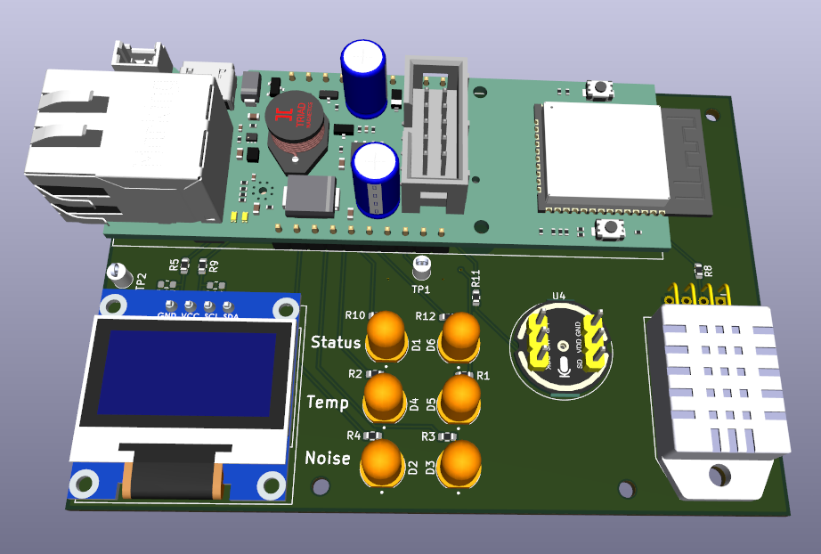

Automated Lab Sensor
A custom PCB and ESP32-based sensor that automated noise, temperature, and humidity monitoring for AMD labs. The system allows users to monitor environmental conditions in real time and track changes or issues over time.
In active use in some AMD labs in the Austin area- PLATFORM
- ESP32
- HARDWARE
- Custom PCB
- MEASUREMENTS
- Noise + temperature + humidity
- TIMELINE
- Jun — Aug 2025

The problem
Laboratory conditions are easier to understand when observations are recorded consistently, tracked, and visualized over time. Noise, temperature, and humidity are three useful measurements, but before this project, managers at the AMD labs lacked a simple open-source solution for tracking this data. I set out to automate this process with a solution that was easy to deploy and access, using an ESP32 with Ethernet connectivity.
The design
The implementation used an ESP32 and a custom PCB, with several sensor modules and display interfaces integrated to monitor and display environmental conditions. For this project, I used an ESP32 Power over Ethernet (PoE) module that connects to the internet through Ethernet and receives power through the same cable. Using C++ and YAML, I configured the sensor network to automatically collect and transmit data in a format that is easy to view.
The outcome
The completed project monitors and records environmental conditions in real time. Integrating embedded hardware and software provided a practical solution for laboratory monitoring. The device remains in use in some AMD labs in the Austin area, where it provides information that helps managers identify and address issues.